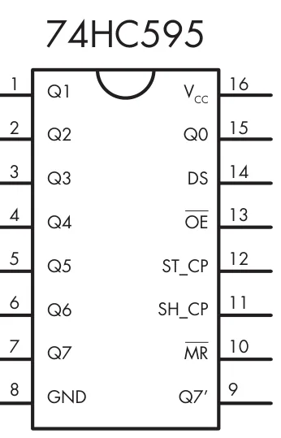
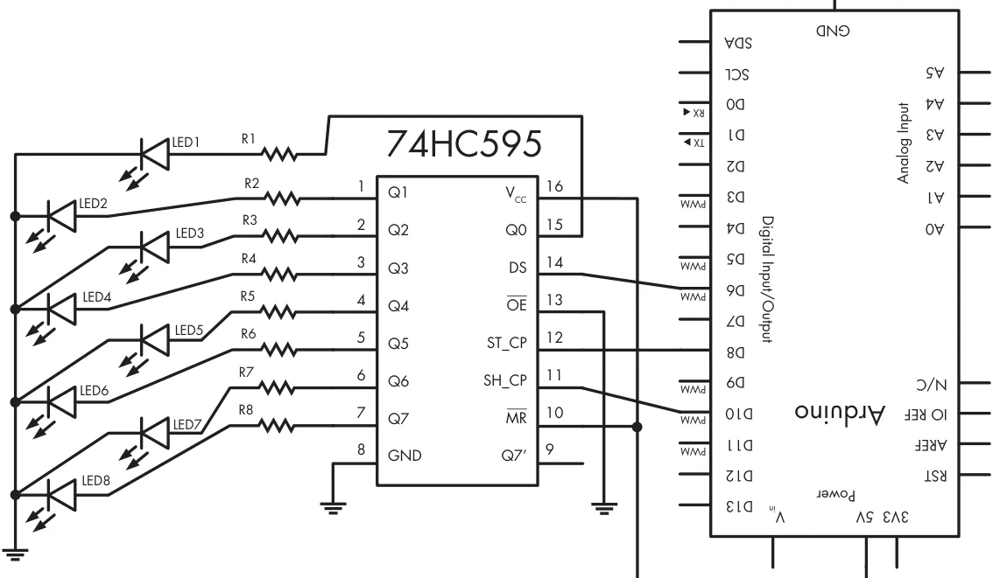

In this project, we’ll use eight LEDs to display binary numbers from 0 to 255. Our sketch will use a for loop to count from 0 to 255 and will send each value to the shift register, which will use LEDs to display the binary equivalent of each number.
The Hardware
The following hardware is required:
- One 74HC595 shift register IC
- Eight LEDs (LED1 to LED8)
- Eight 560 Ω resistors (R1 to R8)
- One breadboard
- Various connecting wires
- Arduino and USB cable
Connecting the 74HC595
Figure 6-5 shows the schematic symbol for the 74HC595.

There are 16 pins on our shift register:
- Pins 15 and 1 to 7 are the eight output pins that we control (labeled Q0 to Q7, respectively).
- Q7 outputs the first bit sent to the shift register, down to Q0, which outputs the last.
- Pin 8 connects to GND.
- Pin 9 is “data out” and is used to send data to another shift register if one is present.
- Pin 10 is always connected to 5 V (for example, the 5 V connector on the Arduino).
- Pins 11 and 12 are called clock and latch.
- Pin 13 is called output enable and is usually connected to GND.
- Pin 14 is for incoming bit data sent from the Arduino.
- Pin 16 is used for power: 5 V from the Arduino.
To give you a sense of the way pins are oriented, the semicircular notch on the left end of the body of the shift register IC shown in Figure 6-4 lies between pins 1 and 16.
The pins are numbered sequentially around the body in a counterclockwise direction, as shown in Figure 6-6, the schematic for our LED binary number display.

The Sketch
And now for the sketch:
// Project 16 – Creating an LED Binary Number Display
#define DATA 6 // digital 6 to pin 14 on the 74HC595
#define LATCH 8 // digital 8 to pin 12 on the 74HC595
#define CLOCK 10 // digital 10 to pin 11 on the 74HC595
void setup()
{
pinMode(LATCH, OUTPUT);
pinMode(CLOCK, OUTPUT);
pinMode(DATA, OUTPUT);
}
void loop()
{
int i;
for ( i = 0; i < 256; i++ )
{
digitalWrite(LATCH, LOW);
shiftOut(DATA, CLOCK, MSBFIRST, a);
digitalWrite(LATCH, HIGH);
delay(200);
}
}In this sketch, we set the three pins connected to the shift register as outputs in void setup() and then add a loop in void loop() that counts from 0 to 255 and repeats. The magic lies inside the loop. When we send a byte of data (for example, 240, or B11110000) to the shift register in the for loop, three things happen:
- The latch pin 12 is set to
LOW(that is, a low signal is applied to it from the Arduino digital output pin 8). This is preparation for setting output pin 12 toHIGH, which latches the data to the output pins aftershiftOuthas completed its task. - We send the byte of data (for example, B11110000) from Arduino digital pin 6 to the shift register and tell the
shiftOutfunction from which direction to interpret the byte of data. For example, if you selectedLSBFIRST, then LEDs 1 to 4 would turn on and the others would turn off. If you usedMSBFIRST, then LEDs 5 to 8 would turn on and the others would turn off. - Finally, the latch pin 12 is set to
HIGH(5 V is applied to it). This tells the shift register that all the bits are shifted in and ready. At this point it alters its output to match the data received.